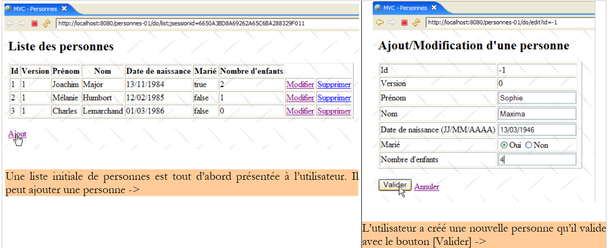
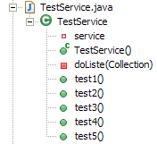
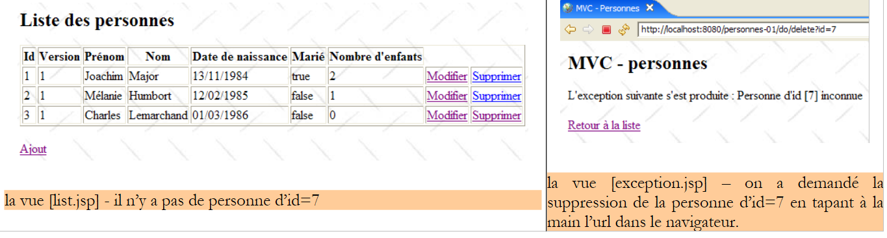
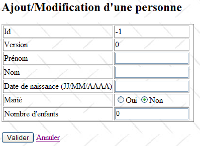

14. تطبيق الويب MVC في بنية ثلاثية الطبقات – المثال 1
14.1. مقدمة
حتى الآن، اكتفينا بأمثلة ذات طابع تعليمي. ولهذا السبب، كان لا بد أن تكون بسيطة. نقدم الآن تطبيقًا أساسيًا ولكنه مع ذلك أكثر ثراءً من جميع التطبيقات التي تم عرضها حتى الآن. وسيتميز هذا التطبيق باستخدام الطبقات الثلاث لهندسة ثلاثية الطبقات:

يُرجى من القارئ إعادة قراءة مبادئ تطبيق الويب MVC في بنية ثلاثية الطبقات في الفقرة 4، إذا كان قد نسيها.
سيسمح تطبيق الويب الذي سنقوم بكتابته بإدارة مجموعة من الأشخاص من خلال أربع عمليات:
- قائمة بأفراد المجموعة
- إضافة شخص إلى المجموعة
- تعديل شخص من المجموعة
- حذف شخص من المجموعة
سنستطيع التعرف على العمليات الأساسية الأربع في جدول قاعدة البيانات. سنقوم بكتابة نسختين من هذا التطبيق:
- في النسخة 1، لن تستخدم الطبقة [dao] قاعدة بيانات. سيتم تخزين الأشخاص في المجموعة في كائن بسيط [ArrayList] تديره داخليًا الطبقة [dao]. سيسمح ذلك للقارئ باختبار التطبيق دون قيود قاعدة البيانات.
- في الإصدار 2، سنضع مجموعة الأشخاص في جدول قاعدة بيانات. سنوضح أن ذلك سيتم دون التأثير على طبقة الويب في الإصدار 1 التي ستبقى دون تغيير.
تُظهر لقطات الشاشة التالية الصفحات التي يتبادلها التطبيق مع المستخدم.



 |
 |
14.2. مشروع Eclipse
يُسمى مشروع التطبيق [personnes-01]:

يغطي هذا المشروع الطبقات الثلاث للبنية ثلاثية الطبقات للتطبيق:
 |
- الطبقة [dao] موجودة في الحزمة [istia.st.mvc.personnes.dao]
- الطبقة [metier] أو [service] موجودة في الحزمة [istia.st.mvc.personnes.service]
- تتضمن الحزمة [istia.st.mvc.personnes.web] الطبقة [web] أو [ui]
- تحتوي الحزمة [istia.st.mvc.personnes.entites] على الكائنات المشتركة بين الطبقات المختلفة
- تحتوي الحزمة [istia.st.mvc.personnes.tests] على اختبارات Junit للطبقات [dao] و [service]
سنستكشف بالتتابع الطبقات الثلاث [dao] و [service] و [web]. نظرًا لأن الكتابة ستستغرق وقتًا طويلاً وقد تكون مملة للقراءة، فقد نختصر التفسيرات أحيانًا، إلا إذا كان ما يتم عرضه جديدًا.
14.3. تمثيل الشخص
تدير التطبيق مجموعة من الأشخاص. أظهرت لقطات الشاشة في الفقرة 14.1 بعض خصائص الشخص. من الناحية الشكلية، يتم تمثيل هذه الخصائص بفئة [Personne]:

الفئة [Personne] هي التالية:
- يتم تحديد هوية الشخص من خلال المعلومات التالية:
- id: رقم يحدد هوية الشخص بشكل فريد
- الاسم: اسم الشخص
- الاسم الأول: اسمه الأول
- dateNaissance: تاريخ ميلاده
- marie: حالته الاجتماعية (متزوج أم لا)
- nbEnfants: عدد أطفاله
- السمة [version] هي سمة تمت إضافتها بشكل مصطنع لتلبية احتياجات التطبيق. من وجهة نظر الكائن، كان من الأفضل بلا شك إضافة هذا السمة في فئة مشتقة من [Personne]. تظهر الحاجة إليه عند استخدام التطبيق على الويب. أحد هذه الحالات هو التالي:
في الوقت T1، يدخل مستخدم U1 لتعديل شخص P. في هذه اللحظة، يكون عدد الأبناء 0. يقوم بتغيير هذا العدد إلى 1 ولكن قبل أن يثبت تعديله، يدخل مستخدم U2 لتعديل نفس الشخص P. وبما أن U1 لم يثبت تعديله بعد، يرى U2 أن عدد الأطفال هو 0. يقوم U2 بتغيير اسم الشخص P إلى أحرف كبيرة. ثم يقوم كل من U1 و U2 بتأكيد تعديلاتهما بهذا الترتيب. التعديل الذي أجراه U2 هو الذي سيفوز: سيتم تحويل الاسم إلى أحرف كبيرة وسيبقى عدد الأطفال صفرًا، حتى وإن كان U1 يعتقد أنه قد غيّره إلى 1.
يساعدنا مفهوم إصدار الشخص في حل هذه المشكلة. لنأخذ نفس حالة الاستخدام:
في الوقت T1، يدخل المستخدم U1 لتعديل شخص P. في هذه اللحظة، يكون عدد الأبناء 0 والإصدار V1. يقوم بتغيير عدد الأبناء إلى 1 ولكن قبل أن يثبت تعديله، يدخل مستخدم U2 لتعديل نفس الشخص P. وبما أن U1 لم يثبت تعديله بعد، يرى U2 أن عدد الأطفال هو 0 والإصدار هو V1. يقوم U2 بتغيير اسم الشخص P إلى أحرف كبيرة. ثم يقوم كل من U1 و U2 بالتصديق على تعديلاتهما بهذا الترتيب. قبل التصديق على أي تعديل، يتم التحقق من أن الشخص الذي يقوم بتعديل الشخص P يمتلك نفس الإصدار الذي يمتلكه الشخص P المسجل حاليًا. وهذا هو الحال بالنسبة للمستخدم U1. وبالتالي يتم قبول تعديله، ثم يتم تغيير إصدار الشخص الذي تم تعديله من V1 إلى V2 للإشارة إلى أن الشخص قد خضع لتغيير. عند التحقق من صحة تعديل U2، سنلاحظ أنه يمتلك نسخة V1 من الشخص P، في حين أن نسخته الحالية هي V2. سنتمكن عندئذٍ من إخبار المستخدم U2 بأن شخصًا آخر سبقه وأن عليه البدء من الإصدار الجديد للشخص P. وسيقوم بذلك، وسيحصل على شخص P من الإصدار V2 الذي أصبح لديه الآن طفل، وسيحول الاسم إلى أحرف كبيرة، ثم يقوم بالتحقق. سيتم قبول تعديله إذا كان الشخص P المسجل لا يزال يحمل الإصدار V2. في النهاية، سيتم أخذ التعديلات التي أجراها U1 و U2 في الاعتبار، بينما في حالة الاستخدام بدون إصدار، كان أحد التعديلات قد ضاع.
- الأسطر 32-40: منشئ قادر على تهيئة حقول شخص. يتم حذف الحقل [version].
- الأسطر 43-51: منشئ يقوم بإنشاء نسخة من الشخص الذي يتم تمريره كمعلمة. يكون لدينا عندئذ كائنان لهما محتوى متطابق ولكن يتم الإشارة إليهما بواسطة مؤشرين مختلفين.
- السطر 55: يتم إعادة تعريف الطريقة [toString] لإرجاع سلسلة أحرف تمثل حالة الشخص
14.4. الطبقة [dao]
تتكون الطبقة [dao] من الفئات والواجهات التالية:

- [IDao] هي الواجهة التي تقدمها الطبقة [dao]
- [DaoImpl] هو تطبيق لها حيث يتم تغليف مجموعة الأشخاص في كائن [ArrayList]
- [DaoException] هو نوع من الاستثناءات غير المراقبة (unchecked)، التي يتم إطلاقها بواسطة الطبقة [dao]
الواجهة [IDao] هي كما يلي:
- تحتوي الواجهة على أربع طرق للعمليات الأربع التي نرغب في إجرائها على مجموعة الأشخاص:
- getAll: للحصول على مجموعة من الأشخاص
- getOne: للحصول على شخص لديه id محدد
- saveOne: لإضافة شخص (id=-1) أو تعديل شخص موجود (id <> -1)
- deleteOne: لحذف شخص له id محدد
من المحتمل أن تطلق الطبقة [dao] استثناءات. وستكون هذه الاستثناءات من النوع [DaoException] :
- السطر 3: الفئة [DaoException] المشتقة من [RuntimeException] هي نوع من الاستثناءات غير الخاضعة للرقابة: لا يُلزمنا المُجمع بما يلي:
- معالجة هذا النوع من الاستثناءات باستخدام try / catch عند استدعاء طريقة قد تطلقه
- وضع العلامة "throws DaoException" في توقيع الأسلوب الذي قد يطلق الاستثناء
تجنبنا هذه التقنية الحاجة إلى توقيع طرق واجهة [IDao] باستثناءات من نوع معين. وبالتالي، سيكون أي تنفيذ يطلق استثناءات غير خاضعة للرقابة مقبولاً، مما يوفر مرونة في البنية.
- السطر 6: رمز خطأ. ستقوم الطبقة [dao] بإطلاق استثناءات متنوعة سيتم تحديدها برموز أخطاء مختلفة. وهذا سيسمح للطبقة التي تقرر معالجة الاستثناء بمعرفة المصدر الدقيق للخطأ وبالتالي اتخاذ الإجراءات المناسبة. هناك طرق أخرى للوصول إلى نفس النتيجة. إحدى هذه الطرق هي إنشاء نوع استثناء لكل نوع خطأ محتمل، على سبيل المثال NomManquantException، PrenomManquantException، AgeIncorrectException، ...
- الأسطر 13-16: المنشئ الذي سيسمح بإنشاء استثناء محدد برمز خطأ بالإضافة إلى رسالة خطأ.
- الأسطر 8-10: الطريقة التي ستسمح لرمز إدارة الاستثناء باسترداد رمز الخطأ.
تقوم الفئة [DaoImpl] بتنفيذ الواجهة [IDao]:
1 2 3 4 5 6 7 8 9 10 11 12 13 14 15 16 17 18 19 20 21 22 23 24 25 26 27 28 29 30 31 32 33 34 35 36 37 38 39 40 41 42 43 44 45 46 47 48 49 50 51 52 53 54 55 56 57 58 59 60 61 62 63 64 65 66 67 68 69 70 71 72 73 74 75 76 77 78 79 80 81 82 83 84 85 86 87 88 89 90 91 92 93 94 95 96 97 98 99 100 101 102 103 104 105 106 107 108 109 110 111 112 113 114 115 116 117 118 119 120 121 122 123 124 125 126 127 128 129 130 131 132 133 134 135 136 137 138 139 140 141 142 143 144 145 146 147 148 149 150 151 152 153 154 155 156 157 158 159 160 161 162 163 164 165 166 167 168 | |
لن نقدم سوى الخطوط العريضة لهذا الكود. لكننا سنقضي بعض الوقت في شرح الأجزاء الأكثر تعقيدًا.
- السطر 13: الكائن [ArrayList] الذي سيحتوي على مجموعة الأشخاص
- السطر 16: معرف آخر شخص تمت إضافته. مع كل إضافة جديدة، سيتم زيادة هذا المعرف بمقدار 1.
سيتم إنشاء مثيل واحد للفئة [DaoImpl]. وهذا ما يُسمى بـ"السينجلتون". تخدم تطبيقات الويب مستخدميها في وقت واحد. في أي لحظة معينة، هناك عدة خيوط يتم تنفيذها بواسطة خادم الويب. تتشارك هذه الخيوط في السينجلتونات:
- السينجلتون الخاص بالطبقة [dao]
- الطبقة [service]
- تلك الخاصة بمختلف وحدات التحكم، ومدققي البيانات، ... في الطبقة الويب
إذا كان للسينجلتون حقول خاصة، فيجب أن نتساءل على الفور عن سبب وجودها. هل هي مبررة؟ في الواقع، سيتم مشاركتها بين خيوط مختلفة. إذا كانت للقراءة فقط، فلا يمثل ذلك مشكلة إذا كان من الممكن تهيئتها في وقت نكون فيه متأكدين من وجود خيط واحد نشط فقط. ونعرف عمومًا كيف نحدد هذا الوقت. وهو وقت بدء تشغيل تطبيق الويب قبل أن يبدأ في خدمة العملاء. وإذا كانت الحقول للقراءة/الكتابة، فيجب وضع آلية لمزامنة الوصول إلى الحقول، وإلا فإننا نسير نحو كارثة. وسنوضح هذه المشكلة عندما نختبر الطبقة [dao].
- لا تحتوي الفئة [DaoImpl] على منشئ. لذلك سيتم استخدام منشئها الافتراضي.
- الأسطر 19-38: سيتم استدعاء الطريقة [init] عند إنشاء مثيل للسينجلتون الخاص بالطبقة [dao]. وهي تنشئ قائمة تضم ثلاثة أشخاص.
- الأسطر 41-43: تنفذ الطريقة [getAll] للواجهة [IDao]. وهي تُرجع مرجعًا إلى قائمة الأشخاص.
- الأسطر 46-55: تنفذ الطريقة [getOne] للواجهة [IDao]. معلمتها هي معرف الشخص المطلوب.
لاسترداده، يتم استدعاء طريقة خاصة [getPosition] في الأسطر 113-126. تعرض هذه الطريقة الموضع في القائمة للشخص المطلوب أو -1 إذا لم يتم العثور على الشخص.
إذا تم العثور على الشخص، فإن الطريقة [getOne] تعرض مرجعًا (السطر 51) لنسخة من هذا الشخص وليس للشخص نفسه. في الواقع، عندما يرغب المستخدم في تعديل شخص ما، سيتم طلب المعلومات المتعلقة به من الطبقة [dao] ونقلها إلى الطبقة [web] للتعديل، في شكل مرجع إلى كائن [Personne]. ستُستخدم هذه الإشارة كحاوية للإدخالات في نموذج التعديل. عندما يقوم المستخدم في الطبقة الويب بإرسال تعديلاته، سيتم تعديل محتوى حاوية الإدخالات. إذا كانت الحاوية عبارة عن إشارة إلى الشخص الفعلي في [ArrayList] من الطبقة [dao]، فسيتم تعديل هذه الطبقة حتى لو لم يتم تقديم التعديلات إلى الطبقتين [service] و [dao]. هذه الأخيرة هي الوحيدة المخولة بإدارة قائمة الأشخاص. لذلك يجب أن تعمل طبقة الويب على نسخة من الشخص المراد تعديله. وهنا تقوم الطبقة [dao] بتوفير هذه النسخة.
إذا لم يتم العثور على الشخص المطلوب، يتم إطلاق استثناء من النوع [DaoException] مع رمز الخطأ 2 (السطر 53).
- الأسطر 94-104: تنفذ الطريقة [deleteOne] للواجهة [IDao]. معلمتها هي معرف الشخص المراد حذفه. إذا كان الشخص المراد حذفه غير موجود، يتم إطلاق استثناء من النوع [DaoException] مع رمز الخطأ 2.
- الأسطر 58-91: تنفذ الطريقة [saveOne] من واجهة [IDao]. معلمتها هي كائن [Personne]. إذا كان معرف هذا الكائن هو -1، فهذا يعني إضافة شخص. وإلا، فهذا يعني تعديل الشخص الموجود في القائمة الذي يحمل هذا المعرف باستخدام قيم المعلمة.
- السطر 60: يتم التحقق من صحة المعلمة [Personne] بواسطة طريقة خاصة [check] محددة في الأسطر 129-155. تقوم هذه الطريقة بإجراء فحوصات أساسية على قيمة الحقول المختلفة في [Personne]. في كل مرة يتم فيها اكتشاف خطأ، يتم إطلاق [DaoException] مع رمز خطأ محدد. وبما أن الطريقة [saveOne] لا تتعامل مع هذا الاستثناء، فإنها ستقوم بإرجاعه إلى الطريقة المستدعية.
- السطر 62: إذا كان معرف المعلمة [Personne] يساوي -1، فهذا يعني أنه تمت إضافة. يتم إضافة الكائن [Personne] إلى القائمة الداخلية للأشخاص (السطر 66)، مع أول معرف متاح (السطر 64)، ورقم إصدار يساوي 1 (السطر 65).
- إذا كان المعلمة [Personne] لها [id] مختلف عن -1، فهذا يعني تعديل الشخص في القائمة الداخلية الذي يحمل هذا [id]. أولاً، يتم التحقق (الأسطر 70-75) من وجود الشخص المراد تعديله. إذا لم يكن الأمر كذلك، يتم إصدار استثناء من النوع [DaoException] مع رمز الخطأ 2.
- إذا كان الشخص موجودًا بالفعل، نتحقق من أن نسخته الحالية هي نفس نسخة المعلمة [Personne] التي تحتوي على التعديلات المطلوب إجراؤها على النسخة الأصلية. إذا لم يكن الأمر كذلك، فهذا يعني أن الشخص الذي يرغب في تعديل الشخص لا يمتلك أحدث نسخة منه. يتم إعلامه بذلك عن طريق إطلاق استثناء من النوع [DaoException] مع رمز الخطأ 3 (السطور 79-80).
- إذا سارت الأمور على ما يرام، يتم إجراء التعديلات على النسخة الأصلية للشخص (الأسطر 85-90)
من الواضح أن هذه الطريقة يجب أن تكون متزامنة. على سبيل المثال، بين اللحظة التي نتحقق فيها من وجود الشخص المراد تعديله واللحظة التي سيتم فيها إجراء التعديل، قد يكون شخص آخر قد حذف هذا الشخص من القائمة. لذا، يجب تعريف الطريقة على أنها [synchronized] لضمان أن يقوم مؤشر ترابط واحد فقط بتنفيذها في كل مرة. وينطبق الأمر نفسه على الطرق الأخرى في واجهة [IDao]. لكننا لا نقوم بذلك، ونفضل نقل هذه المزامنة إلى الطبقة [service]. لتسليط الضوء على مشاكل التزامن، أثناء اختبارات الطبقة [dao]، سنوقف تنفيذ [saveOne] لمدة 10 مللي ثانية (السطر 83) بين اللحظة التي نعلم فيها أنه يمكننا إجراء التعديل واللحظة التي نقوم فيها به فعليًا. سيفقد الخيط الذي ينفذ [saveOne] المعالج لصالح خيط آخر. وبذلك نزيد من فرص ظهور تعارضات في الوصول إلى قائمة الأشخاص.
14.5. اختبارات الطبقة [dao]
تمت كتابة اختبار JUnit للطبقة [dao]:
 |  |
[TestDao] هو اختبار JUnit. لإبراز مشاكل الوصول المتنافس إلى قائمة الأشخاص، يتم إنشاء مؤشرات ترابط من النوع [ThreadDaoMajEnfants]. وهي مكلفة بزيادة عدد أبناء شخص معين بمقدار 1.
يحتوي [TestDao] على خمسة اختبارات من [test1] إلى [test5]. نقدم اثنين منها فقط، وندعو القارئ لاكتشاف البقية في شفرة المصدر المرتبطة بهذا المقال.
- السطر 9: إشارة إلى تنفيذ الطبقة [dao] التي تم اختبارها
- الأسطر 12-15: منشئ الاختبار JUnit. يقوم بإنشاء مثيل من النوع [DaoImpl] للطبقة [dao] المراد اختبارها وتهيئته.
تختبر الطريقة [test1] الطرق الأربع للواجهة [IDao] بالطريقة التالية:
- السطر 3: نطلب قائمة الأشخاص
- السطر 6: يتم عرض هذه القائمة
[1,1,Joachim,Major,13/01/1984,true,2]
[2,1,Mélanie,Humbort,12/01/1985,false,1]
[3,1,Charles,Lemarchand,01/01/1986,false,0]
ثم يضيف الاختبار شخصًا، ويقوم بتعديله وحذفه. وبذلك يتم استخدام الطرق الأربع لواجهة [IDao].
- الأسطر 8-10: يتم إضافة شخص جديد (id=-1).
- السطر 11: يتم استرداد معرف الشخص المضاف لأن عملية الإضافة قد منحته معرفًا. قبل ذلك لم يكن لديه معرف.
- السطران 13-14: نطلب من الطبقة [dao] نسخة من الشخص الذي تمت إضافته للتو. يجب تذكر أنه إذا لم يتم العثور على الشخص المطلوب، فإن الطبقة [dao] تطلق استثناءً. عندها سيحدث تعطل في السطر 13. كان من الممكن معالجة هذه الحالة بشكل أنظف. في السطر 14، يتم التحقق من اسم الشخص الذي تم العثور عليه.
- السطران 16-17: يتم تعديل هذا الاسم ويُطلب من الطبقة [dao] تسجيل التعديلات.
- السطران 19-20: نطلب من الطبقة [dao] نسخة من الشخص الذي تمت إضافته للتو ونتحقق من اسمه الجديد.
- السطر 22: يتم حذف الشخص الذي تمت إضافته في بداية الاختبار.
- السطور 23-34: نطلب من الطبقة [dao] نسخة من الشخص الذي تم حذفه للتو. يجب أن نحصل على [DaoException] برمز 2.
- السطور 36-37: يتم طلب قائمة الأشخاص مرة أخرى. يجب الحصول على نفس القائمة الموجودة في بداية الاختبار.
تسعى الطريقة [test4] إلى تسليط الضوء على مشاكل الوصول المتزامن إلى طرق الطبقة [dao]. تذكر أن هذه الطرق لم تتم مزامنتها. رمز الاختبار هو التالي:
- الأسطر 3-6: نضيف إلى القائمة شخصًا P ليس لديه أطفال. نسجل [id] الخاص به (السطر 6).
- الأسطر 7-13: يتم تشغيل N خيوط. سيقوم كل منها بزيادة عدد أطفال الشخص P بمقدار 1. في النهاية، يجب أن يكون لدى الشخص P N أطفال.
- الأسطر 15-17: تنتظر الطريقة [test4] التي أطلقت الخيوط N حتى تنتهي من عملها قبل الاطلاع على العدد الجديد لأطفال الشخص P.
- الأسطر 18-21: يتم استرداد الشخص P والتحقق من أن عدد أطفاله يساوي N.
- الأسطر 22-35: يتم حذف الشخص P ثم نتحقق من أنه لم يعد موجودًا في القائمة.
في السطر 11، نرى أن الخيوط من النوع [ThreadDaoMajEnfants]. يحتوي منشئ هذا النوع على ثلاثة معلمات:
- الاسم الممنوح للخيط، وذلك لتتبعه عن طريق السجلات
- مرجع إلى الطبقة [dao] حتى يتمكن الخيط من الوصول إليها
- معرف الشخص الذي يجب أن يعمل عليه الخيط
النوع [ThreadDaoMajEnfants] هو التالي:
- السطر 9: [ThreadDaoMajEnfants] هو بالفعل مؤشر ترابط
- الأسطر 18-22: المنشئ الذي يقوم بتهيئة الخيط بثلاث معلومات
- الاسم [name] الممنوح للخيط
- مرجع [dao] على الطبقة [dao]. تجدر الإشارة إلى أننا نعمل مرة أخرى مع نوع الواجهة [IDao] وليس نوع التنفيذ [DaoImpl].
- المعرف [id] للشخص الذي يجب أن يعمل عليه الخيط
عندما يقوم [test4] بتشغيل مؤشر ترابط [ThreadDaoMajEnfants] (السطر 12 من test4)، يتم تنفيذ الطريقة [run] (السطر 25) الخاصة به:
- السطور 78-81: تسمح الطريقة الخاصة [suivi] بعمل سجلات شاشة. وتستخدم الطريقة [run] هذه السجلات لتمكين تتبع مؤشر الترابط أثناء تنفيذه.
- سيحاول الخيط زيادة عدد أبناء الشخص P ذي المعرف [id] بمقدار 1. قد يتطلب هذا التحديث عدة محاولات. لنأخذ خيطين [TH1] و [TH2]. يطلب [TH1] نسخة من الشخص P من الطبقة [dao]. يحصل عليها ويلاحظ أن إصدارها هو V1. يتم مقاطعة [TH1]. يقوم [TH2] الذي كان يتبعه بنفس الشيء ويحصل على نفس الإصدار V1 للشخص P. يتم مقاطعة [TH2]. يستعيد [TH2] زمام الأمور، ويزيد عدد أبناء P ويحفظ تعديلاته. نعلم عندئذٍ أن هذه التعديلات قد تم حفظها وأن إصدار P سينتقل إلى V2. انتهى [TH1] من عمله. يستلم [TH2] زمام الأمور ويفعل الشيء نفسه. سيتم رفض تحديثه لـ P لأنه يمتلك نسخة من P بإصدار V1 في حين أن P الأصلي أصبح الآن بالإصدار V2. يجب على [TH2] عندئذٍ استئناف دورة [lecture -> mise à jour -> sauvegarde] بالكامل. ولهذا السبب، نجد الحلقة في الأسطر 32-72. وفي هذه الحلقة، يطلب الخيط:
- نسخة من الشخص P لتعديلها (السطر 34)
- ينتظر 10 مللي ثانية (السطر 43). هذا أمر مصطنع ويهدف إلى مقاطعة الخيط بين قراءة الشخص P وتحديثه الفعلي في قائمة الأشخاص من أجل زيادة احتمالية حدوث تعارضات.
- يزيد عدد أبناء P (السطر 54) ويحفظ P (السطر 56). إذا لم يكن لدى الخيط الإصدار الصحيح من P، فسيتم إطلاق استثناء بواسطة الطبقة [dao]. ثم يتم استرداد رمز الاستثناء (السطر 61) للتحقق من أنه الرمز 3 بالفعل (إصدار خاطئ من P). إذا لم يكن الأمر كذلك، يتم إعادة إطلاق الاستثناء إلى الأسلوب المستدعي، وهو في النهاية أسلوب الاختبار [test4]. إذا كان لدينا استثناء الرمز 3، فإننا نعيد دورة [lecture -> mise à jour -> sauvegarde]. إذا لم يكن لدينا استثناء، فإن التحديث قد تم وإنهى الخيط عمله.
ما هي نتائج الاختبارات؟
في التكوين الأول الذي تم اختباره:
- نعلق تعليمات الانتظار في الطريقة [saveOne] من [DaoImpl] (السطر 83، الفقرة 14.4).
- تقوم الطريقة [test4] بإنشاء 100 مؤشر ترابط (السطر 8، الفقرة 14.5).
ونحصل على النتائج التالية:

تم اجتياز الاختبارات الخمسة بنجاح.
في التكوين الثاني الذي تم اختباره:
- يتم إلغاء تعليق تعليمة الانتظار في الطريقة [saveOne] من [DaoImpl] (السطر 83، الفقرة 14.4).
- تقوم الطريقة [test4] بإنشاء خيطين (السطر 8، الفقرة 14.5).
ونحصل على النتائج التالية:
 |  |
فشل الاختبار [test4]. تم إنشاء مؤشرين، كل منهما مكلف بزيادة عدد أبناء الشخص P بمقدار 1، حيث كان عددهم في البداية صفرًا. لذلك كنا نتوقع وجود طفلين بعد تنفيذ المؤشرين، لكن لم نحصل سوى على طفل واحد.
دعونا نتابع سجلات الشاشة لـ [test4] لفهم ما حدث:
- السطر 1: يبدأ الخيط رقم 0 عمله
- السطر 2: استرد نسخة من الشخص P ووجد أن عدد أطفاله يساوي 0
- السطر 3: يواجه [Thread.sleep(10)] من طريقة [run] الخاصة به، وبالتالي يتوقف عند الوقت [1145536368171] (مللي ثانية)
- السطر 4: يستعيد الخيط رقم 1 المعالج ويبدأ عمله
- السطر 5: استعاد نسخة من الشخص P ووجد أن عدد أطفاله يساوي 0
- السطر 6: يواجه [Thread.sleep(10)] من طريقة [run] الخاصة به، وبالتالي يتوقف
- السطر 7: يستعيد الخيط رقم 0 المعالج في الوقت [1145536368187] (مللي ثانية)، c.a.d. بعد 16 مللي ثانية من فقدانه.
- السطر 8: الأمر نفسه بالنسبة للخيط رقم 1
- السطر 9: قام الخيط رقم 0 بالتحديث ورفع عدد الأبناء إلى 1
- السطر 10: فعل الخيط رقم 1 الشيء نفسه
السؤال هو: لماذا تمكن الخيط رقم 1 من إجراء التحديث في حين أنه لم يعد يمتلك النسخة الصحيحة للشخص P التي تم تحديثها للتو بواسطة الخيط رقم 0؟
أولاً، يمكن ملاحظة وجود شذوذ بين السطرين 7 و8: يبدو أن الخيط رقم 0 قد فقد المعالج بين هذين السطرين لصالح الخيط رقم 1. ماذا كان يفعل في ذلك الوقت؟ كان ينفذ الطريقة [saveOne] من الطبقة [dao]. وتتميز هذه الطريقة بالهيكل التالي (انظر الفقرة 14.4):
- نفذ الخيط رقم 0 [saveOne] ووصل إلى السطر 8 حيث اضطر إلى التخلي عن المعالج. في غضون ذلك، قرأ إصدار الشخص P وكان 1 لأن الشخص P لم يتم تحديثه بعد.
- وبما أن المعالج أصبح متاحًا، فقد ورثه الخيط رقم 1. وقام بدوره بتنفيذ [saveOne] ووصل إلى السطر 8 حيث اضطر إلى التخلي عن المعالج. في غضون ذلك، قرأ إصدار الشخص P وكان 1 لأن الشخص P لم يتم تحديثه بعد.
- وبما أن المعالج أصبح متاحًا، فقد ورثه الخيط رقم 0. ابتداءً من السطر 9، قام بالتحديث وغيّر عدد الأطفال إلى 1. ثم انتهت الطريقة [run] للخيط رقم 0 وعرض الخيط السجل الذي يفيد بأنه غيّر عدد الأطفال إلى 1 (السطر 9).
- وبما أن المعالج أصبح متاحًا، فقد ورثه الخيط رقم 1. بدءًا من السطر 9، قام بالتحديث وغيّر عدد الأبناء إلى 1. لماذا 1؟ لأنه يمتلك نسخة من P بعدد أبناء يساوي 0. هذا ما يذكره السجل (السطر 5). ثم انتهت الطريقة [run] للخيط رقم 1 وعرض الخيط السجل الذي يفيد بأنه قد غيّر عدد الأبناء إلى 1 (السطر 10).
من أين تأتي المشكلة؟ إنها تأتي من حقيقة أن الخيط رقم 0 لم يكن لديه الوقت لتأكيد تعديله وبالتالي لتغيير إصدار الشخص P قبل أن يحاول الخيط رقم 1 قراءة هذا الإصدار لمعرفة ما إذا كان الشخص P قد تغير. هذه الحالة غير محتملة ولكنها ليست مستحيلة. كان لا بد من إجبار الخيط رقم 0 على فقدان المعالج لإظهارها مع خيطين فقط. بدون هذه الحيلة، لم تنجح التهيئة السابقة في إظهار هذه الحالة نفسها مع 100 خيط. كان الاختبار [test4] ناجحًا.
ما هو الحل؟ هناك بلا شك عدة حلول. أحدها، وهو سهل التنفيذ، هو مزامنة الطريقة [saveOne]:
public synchronized void saveOne(Personne personne)
تضمن الكلمة الرئيسية [synchronized] أن خيطًا واحدًا فقط في كل مرة يمكنه تنفيذ الطريقة. وبالتالي، لن يُسمح للخيط رقم 1 بتنفيذ [saveOne] إلا عندما يخرج الخيط رقم 0 منها. وبذلك نضمن أن نسخة الشخص P ستكون قد تغيرت عندما يدخل الخيط رقم 1 إلى [saveOne]. وسيتم رفض تحديثه لأنه لن يكون لديه النسخة الصحيحة من P.
هذه هي الطرق الأربع للطبقة [dao] التي يجب مزامنتها. ومع ذلك، قررنا الإبقاء على هذه الطبقة كما تم وصفها وتأجيل المزامنة إلى الطبقة [service]. وهناك عدة أسباب لذلك:
- نفترض أن الوصول إلى الطبقة [dao] يتم دائمًا عبر طبقة [service]. وهذا هو الحال في تطبيق الويب الخاص بنا.
- قد يكون من الضروري أيضًا مزامنة الوصول إلى أساليب الطبقة [service] لأسباب أخرى غير تلك التي تجعلنا نزامن أساليب الطبقة [dao]. في هذه الحالة، لا داعي لمزامنة طرق الطبقة [dao]. إذا كنا متأكدين من أن:
- كل وصول إلى الطبقة [dao] يمر عبر الطبقة [service]
- أن خيطًا واحدًا فقط يستخدم الطبقة [service] في كل مرة
فإننا نضمن أن طرق الطبقة [dao] لن يتم تنفيذها بواسطة خيطين في نفس الوقت.
نكتشف الآن الطبقة [service].
14.6. الطبقة [service]
تتكون الطبقة [service] من الفئات والواجهات التالية:

- [IService] هي الواجهة التي تقدمها الطبقة [dao]
- [ServiceImpl] هو تطبيق لهذه الواجهة
الواجهة [IService] هي كما يلي:
وهي مطابقة للواجهة [IDao].
التنفيذ [ServiceImpl] للواجهة [IService] هو كما يلي:
- الأسطر 10-19: السمة [IDao dao] هي مرجع على الطبقة [dao]. سيتم تهيئتها بواسطة Spring IoC.
- الأسطر 22-24: تنفيذ الطريقة [getAll] للواجهة [IService]. تكتفي الطريقة بتفويض الطلب إلى الطبقة [dao].
- الأسطر 27-29: تنفيذ الطريقة [getOne] للواجهة [IService]. تكتفي الطريقة بتفويض الطلب إلى الطبقة [dao].
- الأسطر 32-34: تنفيذ الطريقة [saveOne] للواجهة [IService]. تكتفي الطريقة بتفويض الطلب إلى الطبقة [dao].
- الأسطر 37-39: تنفيذ الطريقة [deleteOne] للواجهة [IService]. تكتفي الطريقة بتفويض الطلب إلى الطبقة [dao].
- جميع الطرق متزامنة (الكلمة الرئيسية synchronized) مما يضمن أن خيطًا واحدًا فقط في كل مرة يمكنه استخدام الطبقة [service] وبالتالي الطبقة [dao].
14.7. اختبارات الطبقة [service]
تمت كتابة اختبار JUnit للطبقة [service]:
|  |
[TestService] هو الاختبار JUnit. الاختبارات التي تم إجراؤها مطابقة تمامًا لتلك التي تم إجراؤها للطبقة [dao]. الهيكل الأساسي لـ [TestService] هو كما يلي:
- السطر 9: الطبقة [service] التي تم اختبارها من النوع [ServiceImpl].
- الأسطر 11-15: يقوم منشئ الاختبار JUnit بإنشاء مثيل للطبقة [service] المراد اختبارها (السطر 12)، وإنشاء مثيل للطبقة [dao] (السطر 13) ويُعلم الطبقة [service] بأن عليها استخدام هذه الطبقة [dao] (السطر 14).
تقوم الطريقة [test1] باختبار الطرق الأربع لواجهة [IService] بنفس الطريقة التي تتبعها طريقة اختبار الطبقة [dao] التي تحمل الاسم نفسه. ببساطة، يتم الوصول إلى الطبقة [service] (الأسطر 25 و32 و35) بدلاً من الطبقة [dao].
تسعى طريقة [test4] إلى تسليط الضوء على مشاكل الوصول المتنافس إلى طرق الطبقة [service]. وهي، مرة أخرى، مطابقة لطريقة الاختبار [test4] للطبقة [dao]. ومع ذلك، هناك بعض التفاصيل التي تتغير:
- يتم الاتصال بالطبقة [service] بدلاً من الطبقة [dao] (السطر 55)
- يتم تمرير مرجع إلى الطبقة [service] إلى الخيوط بدلاً من الطبقة [dao] (السطر 61)
النوع [ThreadServiceMajEnfants] هو أيضًا مطابق تقريبًا للنوع [ThreadDaoMajEnfants] باستثناء أنه يعمل مع الطبقة [service] وليس الطبقة [dao]:
- السطر 12: يعمل الخيط مع الطبقة [service]
نجري الاختبارات باستخدام التكوين الذي تسبب في مشكلة في الطبقة [dao]:
- نقوم بإلغاء تعليق تعليمات الانتظار في الطريقة [saveOne] من [DaoImpl] (السطر 83، الفقرة 14.4).
- تقوم الطريقة [test4] بإنشاء 100 مؤشر ترابط (السطر 65، الفقرة 14.7).
النتائج التي تم الحصول عليها هي كما يلي:
 |
إن تزامن طرق الطبقة [service] هو ما سمح بنجاح الاختبار [test4].
14.8. الطبقة [web]
لنتذكر بنية 3tier لتطبيقنا:
 |
ستوفر الطبقة [web] شاشات للمستخدم لتمكينه من إدارة مجموعة الأشخاص:
- قائمة بأفراد المجموعة
- إضافة شخص إلى المجموعة
- تعديل شخص في المجموعة
- حذف شخص من المجموعة
ولتحقيق ذلك، ستعتمد على الطبقة [service] التي ستستعين بدورها بالطبقة [dao]. لقد قدمنا بالفعل الشاشات التي تديرها الطبقة [web] (الفقرة 14.1). لوصف طبقة الويب، سنقدم بالتتابع:
- تكوينها
- طرق العرض
- وحدة التحكم الخاصة بها
- بعض الاختبارات
14.8.1. تكوين تطبيق الويب
مشروع Eclipse للتطبيق هو كما يلي:

- في الحزمة [istia.st.mvc.personnes.web]، نجد وحدة التحكم [Application].
- توجد الصفحات JSP / JSTL في [WEB-INF/vues].
- يحتوي المجلد [lib] على الأرشيفات الخارجية اللازمة للتطبيق. وهي مرئية في المجلد [Web App Libraries].
[web.xml]
الملف [web.xml] هو الملف الذي يستخدمه خادم الويب لتحميل التطبيق. ومحتواه كما يلي:
<?xml version="1.0" encoding="UTF-8"?>
<web-app id="WebApp_ID" version="2.4"
xmlns="http://java.sun.com/xml/ns/j2ee"
xmlns:xsi="http://www.w3.org/2001/XMLSchema-instance"
xsi:schemaLocation="http://java.sun.com/xml/ns/j2ee http://java.sun.com/xml/ns/j2ee/web-app_2_4.xsd">
<display-name>mvc-personnes-01</display-name>
<!-- ServletPersonne -->
<servlet>
<servlet-name>personnes</servlet-name>
<servlet-class>
istia.st.mvc.personnes.web.Application
</servlet-class>
<init-param>
<param-name>urlEdit</param-name>
<param-value>/WEB-INF/vues/edit.jsp</param-value>
</init-param>
<init-param>
<param-name>urlErreurs</param-name>
<param-value>/WEB-INF/vues/erreurs.jsp</param-value>
</init-param>
<init-param>
<param-name>urlList</param-name>
<param-value>/WEB-INF/vues/list.jsp</param-value>
</init-param>
</servlet>
<!-- تعيين ServletPersonne-->
<servlet-mapping>
<servlet-name>personnes</servlet-name>
<url-pattern>/do/*</url-pattern>
</servlet-mapping>
<!-- ملفات الصفحة الرئيسية -->
<welcome-file-list>
<welcome-file>index.jsp</welcome-file>
</welcome-file-list>
<!-- صفحة خطأ غير متوقع -->
<error-page>
<exception-type>java.lang.Exception</exception-type>
<location>/WEB-INF/vues/exception.jsp</location>
</error-page>
</web-app>
- الأسطر 27-30: سيتم معالجة عناوين URL [/do/*] بواسطة السيرفلت [personnes]
- الأسطر 9-12: الخادم الصغير [personnes] هو مثيل لفئة [Application]، وهي فئة سنقوم بإنشائها.
- الأسطر 13-24: تحدد ثلاثة معلمات [urlList, urlEdit, urlErreurs] تحدد عناوين URL لصفحات JSP الخاصة بعروض [list, edit, erreurs].
- الأسطر 32-34: يحتوي التطبيق على صفحة دخول افتراضية [index.jsp] تقع في جذر مجلد تطبيق الويب.
- الأسطر 36-39: يحتوي التطبيق على صفحة أخطاء افتراضية يتم عرضها عندما يلتقط خادم الويب استثناءً لا يديره التطبيق.
- السطر 37: تشير العلامة <exception-type> إلى نوع الاستثناء الذي تديره التوجيهية <error-page>، وهنا النوع [java.lang.Exception] ومشتقاته، أي جميع الاستثناءات.
- السطر 38: تشير العلامة <location> إلى الصفحة JSP التي يجب عرضها عند حدوث استثناء من النوع المحدد بواسطة <exception-type>. الاستثناء الذي حدث متاح في هذه الصفحة في كائن يسمى exception إذا كانت الصفحة تحتوي على التوجيه:
<%@ page isErrorPage="true" %>
- (تابع)
- إذا حدد <exception-type> نوعًا T1 ووصلت استثناءات من النوع T2 غير مشتقة من T1 إلى خادم الويب، فإن الخادم يرسل إلى العميل صفحة استثناء خاصة به، وهي عادةً ما تكون غير سهلة الاستخدام. ومن هنا تأتي أهمية العلامة <error-page> في الملف [web.xml].
[index.jsp]
يتم عرض هذه الصفحة إذا طلب المستخدم سياق التطبيق مباشرةً دون تحديد عنوان URL، c.a.d. هنا [/personnes-01]. ومحتواها كما يلي:
<%@ page language="java" pageEncoding="ISO-8859-1" contentType="text/html;charset=ISO-8859-1"%>
<%@ taglib uri="/WEB-INF/c.tld" prefix="c" %>
<c:redirect url="/do/list"/>
[index.jsp] يعيد توجيه العميل إلى عنوان URL [/do/list]. يعرض عنوان URL هذا قائمة بأفراد المجموعة.
14.8.2. صفحات JSP / JSTL للتطبيق
عرض [list.jsp]
يُستخدم لعرض قائمة الأشخاص:

رمزها هو التالي:
<%@ page language="java" pageEncoding="ISO-8859-1" contentType="text/html;charset=ISO-8859-1"%>
<%@ taglib uri="/WEB-INF/c.tld" prefix="c" %>
<%@ taglib uri="/WEB-INF/taglibs-datetime.tld" prefix="dt" %>
<html>
<head>
<title>MVC - Personnes</title>
</head>
<body background="<c:url value="/ressources/standard.jpg"/>">
<h2>Liste des personnes</h2>
<table border="1">
<tr>
<th>Id</th>
<th>Version</th>
<th>Prénom</th>
<th>Nom</th>
<th>Date de naissance</th>
<th>Marié</th>
<th>Nombre d'enfants</th>
<th></th>
</tr>
<c:forEach var="personne" items="${personnes}">
<tr>
<td><c:out value="${personne.id}"/></td>
<td><c:out value="${personne.version}"/></td>
<td><c:out value="${personne.prenom}"/></td>
<td><c:out value="${personne.nom}"/></td>
<td><dt:format pattern="dd/MM/yyyy">${personne.dateNaissance.time}</dt:format></td>
<td><c:out value="${personne.marie}"/></td>
<td><c:out value="${personne.nbEnfants}"/></td>
<td><a href="<c:url value="/do/edit?id=${personne.id}"/>">Modifier</a></td>
<td><a href="<c:url value="/do/delete?id=${personne.id}"/>">Supprimer</a></td>
</tr>
</c:forEach>
</table>
<br>
<a href="<c:url value="/do/edit?id=-1"/>">Ajout</a>
</body>
</html>
- تستقبل هذه العرض عنصرًا في نموذجها:
- العنصر [personnes] المرتبط بكائن من النوع [ArrayList] من كائنات من النوع [Personne]
- الأسطر 22-34: يتم تصفح قائمة ${personnes} لعرض جدول HTML يحتوي على أفراد المجموعة.
- السطر 31: يتم تعيين عنوان URL الذي يشير إليه الرابط [Modifier] بواسطة الحقل [id] للشخص الحالي حتى يعرف المتحكم المرتبط بعنوان URL [/do/edit] الشخص الذي يجب تعديله.
- السطر 32: يتم إجراء الأمر نفسه بالنسبة للرابط [Supprimer].
- السطر 28: لعرض تاريخ ميلاد الشخص بالصيغة JJ/MM/AAAA، نستخدم العلامة <dt> من مكتبة العلامات [DateTime] لمشروع Apache [Jakarta Taglibs]:

ملف وصف مكتبة العلامات هذه محدد في السطر 3.
- السطر 37: الرابط [Ajout] لإضافة شخص جديد يستهدف عنوان URL [/do/edit] مثل الرابط [Modifier] في السطر 31. إن القيمة -1 للمعلمة [id] هي التي تشير إلى أننا نتعامل مع عملية إضافة وليس تعديل.
الطريقة [edit.jsp]
يُستخدم لعرض نموذج إضافة شخص جديد أو تعديل شخص موجود:
 |
رمز العرض [edit.jsp] هو التالي:
<%@ page language="java" pageEncoding="ISO-8859-1" contentType="text/html;charset=ISO-8859-1"%>
<%@ taglib uri="/WEB-INF/c.tld" prefix="c" %>
<%@ taglib uri="/WEB-INF/taglibs-datetime.tld" prefix="dt" %>
<html>
<head>
<title>MVC - Personnes</title>
</head>
<body background="../ressources/standard.jpg">
<h2>Ajout/Modification d'une personne</h2>
<c:if test="${erreurEdit != ''}">
<h3>Echec de la mise à jour :</h3>
L'erreur suivante s'est produite : ${erreurEdit}
<hr>
</c:if>
<form method="post" action="<c:url value="/do/validate"/>">
<table border="1">
<tr>
<td>Id</td>
<td>${id}</td>
</tr>
<tr>
<td>Version</td>
<td>${version}</td>
</tr>
<tr>
<td>Prénom</td>
<td>
<input type="text" value="${prenom}" name="prenom" size="20">
</td>
<td>${erreurPrenom}</td>
</tr>
<tr>
<td>Nom</td>
<td>
<input type="text" value="${nom}" name="nom" size="20">
</td>
<td>${erreurNom}</td>
</tr>
<tr>
<td>Date de naissance (JJ/MM/AAAA)</td>
<td>
<input type="text" value="${dateNaissance}" name="dateNaissance">
</td>
<td>${erreurDateNaissance}</td>
</tr>
<tr>
<td>Marié</td>
<td>
<c:choose>
<c:when test="${marie}">
<input type="radio" name="marie" value="true" checked>Oui
<input type="radio" name="marie" value="false">Non
</c:when>
<c:otherwise>
<input type="radio" name="marie" value="true">Oui
<input type="radio" name="marie" value="false" checked>Non
</c:otherwise>
</c:choose>
</td>
</tr>
<tr>
<td>Nombre d'enfants</td>
<td>
<input type="text" value="${nbEnfants}" name="nbEnfants">
</td>
<td>${erreurNbEnfants}</td>
</tr>
</table>
<br>
<input type="hidden" value="${id}" name="id">
<input type="hidden" value="${version}" name="version">
<input type="submit" value="Valider">
<a href="<c:url value="/do/list"/>">Annuler</a>
</form>
</body>
</html>
تعرض هذه العرض نموذجًا لإضافة شخص جديد أو تحديث شخص موجود. بعد ذلك، ولتبسيط الكتابة، سنستخدم المصطلح الوحيد [mise à jour]. يؤدي الزر [Valider] (السطر 73) إلى تشغيل POST للنموذج الموجود على عنوان URL [/do/validate] (السطر 16). إذا فشل POST، يتم إعادة عرض العرض [edit.jsp] مع الخطأ أو الأخطاء التي حدثت، وإلا يتم عرض العرض [list.jsp].
- تتلقى طريقة العرض [edit.jsp] المعروضة على كل من GET و POST التي تفشل، العناصر التالية في نموذجها:
السمة | GET | POST |
معرف الشخص الذي تم تحديثه | كما سبق | |
إصداره | نفس الشيء | |
اسمه الأول | الاسم الأول الذي تم إدخاله | |
اسمه | الاسم المدخل | |
تاريخ الميلاد | تاريخ الميلاد الذي تم إدخاله | |
حالته الاجتماعية | الحالة الاجتماعية التي تم إدخالها | |
عدد أطفاله | عدد الأطفال الذي تم إدخاله | |
فارغ | رسالة خطأ تشير إلى فشل الإضافة أو التعديل عند POST الناجم عن الزر [Envoyer]. فارغ في حالة عدم وجود خطأ. | |
فارغ | يشير إلى اسم أول خاطئ – فارغ في حالة عدم وجود خطأ | |
فارغ | يشير إلى اسم خاطئ – فارغ بخلاف ذلك | |
فارغ | يشير إلى تاريخ ميلاد خاطئ – فارغ بخلاف ذلك | |
فارغ | يشير إلى عدد أطفال خاطئ – فارغ بخلاف ذلك |
- الأسطر 11-15: إذا فشل POST في النموذج، فسيظهر [erreurEdit!=''] وستظهر رسالة خطأ.
- السطر 16: سيتم إرسال النموذج إلى عنوان URL [/do/validate]
- السطر 20: يتم عرض عنصر [id] من القالب
- السطر 24: يتم عرض العنصر [version] من النموذج
- الأسطر 26-32: إدخال الاسم الأول للشخص:
- عند العرض الأولي للنموذج (GET)، يعرض ${prenom} القيمة الحالية لحقل [prenom] الخاص بالكائن [Personne] الذي تم تحديثه ويكون ${erreurPrenom} فارغًا.
- في حالة حدوث خطأ بعد POST، يتم إعادة عرض القيمة المدخلة ${prenom} بالإضافة إلى رسالة الخطأ المحتملة ${erreurPrenom}
- الأسطر 33-39: إدخال اسم الشخص
- الأسطر 40-46: إدخال تاريخ ميلاد الشخص
- الأسطر 47-61: إدخال حالة الشخص (متزوج أم لا) باستخدام زر اختيار. يتم استخدام قيمة الحقل [marie] من الكائن [Personne] لمعرفة أي من زري الاختيار يجب تحديده.
- السطور 62-68: إدخال عدد أطفال الشخص
- السطر 71: حقل HTML مخفي يُسمى [id] وقيمته هي الحقل [id] للشخص الذي يجري تحديثه، -1 للإضافة، وقيمة أخرى للتعديل.
- السطر 72: حقل مخفي HTML باسم [version] وقيمته هي الحقل [id] للشخص قيد التحديث.
- السطر 73: الزر [Valider] من النوع [Submit] في النموذج
- السطر 74: رابط يسمح بالعودة إلى قائمة الأشخاص. وقد تمت تسميته [Annuler] لأنه يسمح بمغادرة النموذج دون تأكيده.
عرض [exception.jsp]
تُستخدم لعرض صفحة تشير إلى حدوث استثناء لم يتم التعامل معه من قبل التطبيق وتم إرساله إلى خادم الويب.
على سبيل المثال، لنحذف شخصًا غير موجود في المجموعة:
 |
رمز عرض [exception.jsp] هو التالي:
<%@ page language="java" pageEncoding="ISO-8859-1" contentType="text/html;charset=ISO-8859-1"%>
<%@ taglib uri="/WEB-INF/c.tld" prefix="c" %>
<%@ page isErrorPage="true" %>
<%
response.setStatus(200);
%>
<html>
<head>
<title>MVC - Personnes</title>
</head>
<body background="<c:url value="/ressources/standard.jpg"/>">
<h2>MVC - personnes</h2>
L'exception suivante s'est produite :
<%= exception.getMessage()%>
<br><br>
<a href="<c:url value="/do/list"/>">Retour à la liste</a>
</body>
</html>
- تتلقى هذه العرضة مفتاحًا في نموذجها، وهو العنصر [exception] الذي يمثل الاستثناء الذي تم اعتراضه بواسطة خادم الويب. لكي يتم تضمين هذا العنصر في نموذج الصفحة JSP بواسطة خادم الويب، يجب أن تكون الصفحة قد حددت العلامة في السطر 3.
- السطر 6: يتم تعيين رمز الحالة HTTP للرد على القيمة 200. وهذا هو الرأس الأول HTTP للرد. يشير الرمز 200 للعميل إلى أن طلبه قد تمت تلبيته. عادةً ما يتم تضمين مستند HTML في استجابة الخادم. وهذا هو الحال هنا. إذا لم يتم تعيين رمز الحالة HTTP للرد على 200، فسيكون له هنا القيمة 500 مما يعني حدوث خطأ. في الواقع، عندما يعترض خادم الويب استثناءً غير مُعالج، فإنه يرى هذه الحالة غير طبيعية ويبلغ عنها برمز 500. يختلف رد الفعل على الرمز 500 باختلاف المتصفحات: يعرض Firefox المستند الذي قد يصاحب هذه الاستجابة، بينما يتجاهل متصفح آخر هذا المستند ويعرض صفحته الخاصة. ولهذا السبب استبدلنا الرمز 500 بالرمز 200.
- السطر 16: يتم عرض نص الاستثناء
- السطر 18: يُعرض للمستخدم رابط للعودة إلى قائمة الأشخاص
عرض [erreurs.jsp]
يُستخدم لعرض صفحة تشير إلى أخطاء تهيئة التطبيق، c.a.d. الأخطاء المكتشفة أثناء تنفيذ طريقة [init] لبرنامج الخدمة الخاص بوحدة التحكم. قد يكون ذلك، على سبيل المثال، عدم وجود معلمة في الملف [web.xml] كما هو موضح في المثال أدناه:

رمز الصفحة [erreurs.jsp] هو التالي:
<%@ page language="java" contentType="text/html; charset=ISO-8859-1"
pageEncoding="ISO-8859-1"%>
<!DOCTYPE HTML PUBLIC "-//W3C//DTD HTML 4.01 Transitional//EN">
<%@ taglib uri="/WEB-INF/c.tld" prefix="c" %>
<html>
<head>
<title>MVC - Personnes</title>
</head>
<body>
<h2>Les erreurs suivantes se sont produites</h2>
<ul>
<c:forEach var="erreur" items="${erreurs}">
<li>${erreur}</li>
</c:forEach>
</ul>
</body>
</html>
تستقبل الصفحة في نموذجها عنصر [erreurs] وهو كائن من النوع [ArrayList] من كائنات [String]، وهذه الأخيرة هي رسائل خطأ. يتم عرضها بواسطة حلقة الأسطر 13-15.
14.8.3. وحدة التحكم في التطبيق
يتم تعريف وحدة التحكم [Application] في الحزمة [istia.st.mvc.personnes.web]:

هيكل وبدء تشغيل وحدة التحكم
هيكل وحدة التحكم [Application] هو كما يلي:
- الأسطر 20-36: يتم استرداد المعلمات المتوقعة في الملف [web.xml].
- الأسطر 39-41: يجب أن يكون المعلمة [urlErreurs] موجودة بالضرورة لأنها تشير إلى عنوان URL للطريقة [erreurs] القادرة على عرض أي أخطاء في التهيئة. إذا لم يكن موجودًا، يتم إيقاف التطبيق عن طريق تشغيل [ServletException] (السطر 40). سيتم رفع هذا الاستثناء إلى خادم الويب وسيتم إدارته بواسطة العلامة <error-page> في الملف [web.xml]. وبالتالي يتم عرض العرض [exception.jsp]:

الرابط [Retour à la liste] أعلاه غير فعال. يؤدي استخدامه إلى إرجاع نفس الاستجابة طالما لم يتم تعديل التطبيق وإعادة تحميله. وهو مفيد لأنواع أخرى من الاستثناءات كما رأينا سابقًا.
- السطر 43: ينشئ مثيل [DaoImpl] الذي ينفذ الطبقة [dao]
- السطر 44: تهيئة هذه المثيل (إنشاء قائمة أولية من ثلاثة أشخاص)
- السطر 46: ينشئ مثيل [ServiceImpl] الذي ينفذ الطبقة [service]
- السطر 47: تهيئة الطبقة [service] بإعطائها مرجعًا على الطبقة [dao]
بعد تهيئة وحدة التحكم، تتوفر لأساليبها مرجع [service] على الطبقة [service] (السطر 15) والتي ستستخدمها لتنفيذ الإجراءات التي يطلبها المستخدم. سيتم اعتراض هذه الإجراءات بواسطة الطريقة [doGet] التي ستقوم بمعالجتها بواسطة طريقة معينة في وحدة التحكم:
Url | طريقة HTTP | طريقة وحدة التحكم |
GET | doListPersonnes | |
GET | doEditPersonne | |
POST | doValidatePersonne | |
GET | doDeletePersonne |
الطريقة [doGet]
تهدف هذه الطريقة إلى توجيه معالجة الإجراءات التي يطلبها المستخدم إلى الطريقة الصحيحة. ورمزها هو التالي:
- الأسطر 7-13: يتم التحقق من أن قائمة أخطاء التهيئة فارغة. إذا لم يكن الأمر كذلك، يتم عرض طريقة العرض [erreurs(erreurs)] التي ستشير إلى الخطأ أو الأخطاء.
- السطر 15: يتم استرداد الطريقة [get] أو [post] التي استخدمها العميل لتقديم طلبه.
- السطر 17: يتم استرداد قيمة المعلمة [action] من الطلب.
- الأسطر 23-27: معالجة الطلب [GET /do/list] الذي يطلب قائمة بالأشخاص.
- الأسطر 28-32: معالجة الطلب [GET /do/delete] الذي يطلب حذف شخص.
- الأسطر 33-37: معالجة الطلب [GET /do/edit] الذي يطلب نموذج تحديث شخص.
- الأسطر 38-42: معالجة الطلب [POST /do/validate] الذي يطلب التحقق من صحة الشخص الذي تم تحديثه.
- السطر 44: إذا لم تكن الإجراء المطلوب أحد الإجراءات الخمسة السابقة، يتم التعامل معه كما لو كان [GET /do/list].
الطريقة [doListPersonnes]
تعالج هذه الطريقة الطلب [GET /do/list] الذي يطلب قائمة بالأشخاص:

ورمزها هو التالي:
- السطر 5: نطلب من الطبقة [service] قائمة بالأشخاص في المجموعة ونضعها في النموذج تحت المفتاح "أشخاص".
- السطر 7: يتم عرض العرض [list.jsp] الموصوف في الفقرة 14.8.2.
الطريقة [doDeletePersonne]
تعالج هذه الطريقة الاستعلام [GET /do/delete?id=XX] الذي يطلب حذف الشخص ذي المعرف id=XX. عنوان URL [/do/delete?id=XX] هو عنوان روابط [Supprimer] في العرض [list.jsp]:
الذي رمزه هو التالي:
في السطر 12، نرى عنوان URL [/do/delete?id=XX] للرابط [Supprimer]. يجب أن تقوم الطريقة [doDeletePersonne] التي تعالج عنوان URL هذا بحذف الشخص ذي المعرف id=XX ثم عرض القائمة الجديدة لأفراد المجموعة. ورمزها هو التالي:
- السطر 5: عنوان URL المعالج هو [/do/delete?id=XX]. يتم استرداد القيمة [XX] من المعلمة [id].
- السطر 7: نطلب من الطبقة [service] حذف الشخص الذي يحمل المعرف الذي تم الحصول عليه. لا نقوم بأي تحقق. إذا كان الشخص الذي نسعى إلى حذفه غير موجود، فإن الطبقة [dao] تطلق استثناءً ترفعه الطبقة [service]. نحن لا نديرها هنا أيضًا، في وحدة التحكم. وبالتالي، ستنتقل إلى خادم الويب الذي سيقوم، حسب التكوين، بعرض الصفحة [exception.jsp]، الموضحة في الفقرة 14.8.2:

- السطر 9: إذا تمت عملية الحذف (بدون استثناء)، يُطلب من العميل إعادة التوجيه إلى عنوان URL النسبي [list]. نظرًا لأن الرابط الذي تمت معالجته للتو هو [/do/delete]، فإن عنوان URL لإعادة التوجيه سيكون [/do/list]. وبالتالي، سيقوم المتصفح بإجراء [GET /do/list] مما سيؤدي إلى عرض قائمة الأشخاص.
الطريقة [doEditPersonne]
تعالج هذه الطريقة الطلب [GET /do/edit?id=XX] الذي يطلب نموذج تحديث الشخص ذي المعرف id=XX. عنوان URL [/do/edit?id=XX] هو عنوان روابط [Modifier] ورابط [Ajout] الخاص بعرض [list.jsp]:
والذي يكون الرمز الخاص به كما يلي:
في السطر 11، نرى عنوان URL [/do/edit?id=XX] للرابط [Modifier] وفي السطر 17، عنوان URL [/do/edit?id=-1] للرابط [Ajout]. يجب أن تعرض الطريقة [doEditPersonne] نموذج تحرير الشخص ذي المعرف id=XX أو، إذا كان الأمر يتعلق بإضافة، أن تعرض نموذجًا فارغًا.
 |  |
رمز الطريقة [doEditPersonne] هو التالي:
- يستهدف GET عنوان URL من النوع [/do/edit?id=XX]. في السطر 5، نسترد قيمة [id]. بعد ذلك، هناك حالتان:
- إذا كان id مختلفًا عن -1، فهذا يعني أنه تعديل ويجب عرض نموذج مملوء مسبقًا بمعلومات الشخص المراد تعديله. في السطر 10، يتم طلب هذا الشخص من الطبقة [service].
- id يساوي -1. إذن، يتعلق الأمر بإضافة ويجب عرض نموذج فارغ. لهذا الغرض، يتم إنشاء شخص فارغ في السطرين 13-14.
- يتم وضع الكائن [Personne] الذي تم الحصول عليه في قالب الصفحة [edit.jsp] الموصوف في الفقرة 14.8.2. يتضمن هذا القالب العناصر التالية [erreurEdit, id, version, prenom, erreurPrenom, nom, erreurNom, dateNaissance, erreurDateNaissance, marie, nbEnfants, erreurNbEnfants]. يتم تهيئة هذه العناصر في الأسطر 17-30 باستثناء تلك التي تكون قيمتها هي السلسلة الفارغة [erreurPrenom, erreurNom, erreurDateNaissance, erreurNbEnfants]. ومن المعروف أنه في حالة عدم وجودها في النموذج، ستعرض المكتبة JSTL سلسلة فارغة كقيمة لها. على الرغم من أن العنصر [erreurEdit] له أيضًا قيمة سلسلة فارغة، إلا أنه يتم تهيئته لأن هناك اختبارًا يتم إجراؤه على قيمته في الصفحة [edit.jsp].
- بمجرد أن يصبح النموذج جاهزًا، ينتقل التحكم إلى الصفحة [edit.jsp]، الأسطر 32-33، والتي ستقوم بإنشاء العرض [edit].
الطريقة [doValidatePersonne]
تعالج هذه الطريقة الطلب [POST /do/validate] الذي يتحقق من صحة نموذج التحديث. يتم تشغيل POST بواسطة الزر [Valider]:

دعونا نستعرض عناصر الإدخال في النموذج HTML من العرض أعلاه:
يحتوي الطلب POST على المعلمات [prenom, nom, dateNaissance, marie, nbEnfants, id, version] ويتم إرساله إلى عنوان URL [/do/validate] (السطر 1). ويتم معالجته بواسطة الطريقة [doValidatePersonne] التالية:
- الأسطر 8-14: يتم استرداد المعلمة [prenom] من الطلب POST والتحقق من صحتها. إذا تبين أنه غير صحيح، يتم تهيئة العنصر [erreurPrenom] برسالة خطأ ووضعه في سمات الطلب.
- الأسطر 16-22: يتم إجراء عملية مماثلة للمعلمة [nom]
- الأسطر 24-32: يتم العمل بنفس الطريقة بالنسبة للمعلمة [dateNaissance]
- السطر 34: يتم استرداد المعلمة [marie]. لا يتم التحقق من صحتها لأنها تأتي مبدئيًا من قيمة زر اختيار. ومع ذلك، لا شيء يمنع برنامجًا من إنشاء [POST /personnes-01/do/validate] مصحوبًا بمعلمة [marie] وهمية. لذلك يجب أن نختبر صحة هذا المعامل. هنا، نعتمد على إدارة الاستثناءات لدينا التي تؤدي إلى عرض الصفحة [exception.jsp] إذا لم يقم المتحكم بإدارتها بنفسه. لذا، إذا فشل تحويل المعلمة [marie] إلى قيمة منطقية في السطر 34، فسيتم إصدار استثناء يؤدي إلى إرسال الصفحة [exception.jsp] إلى العميل. هذا الأداء يناسبنا.
- الأسطر 34-54: يتم استرداد المعلمة [nbEnfants] والتحقق من قيمتها.
- السطر 56: يتم استرداد المعلمة [id] دون التحقق من قيمتها
- السطر 58: نفعل الشيء نفسه بالنسبة للمعلمة [version]
- الأسطر 60-65: إذا كان النموذج غير صحيح، يتم إعادة عرضه مع رسائل الخطأ التي تم إنشاؤها مسبقًا
- الأسطر 67-69: إذا كان صالحًا، يتم إنشاء كائن جديد [Personne] باستخدام عناصر النموذج
- السطور 70-78: يتم حفظ الشخص. قد يفشل الحفظ. في بيئة متعددة المستخدمين، قد يكون الشخص المراد تعديله قد تم حذفه أو تعديله بالفعل من قبل شخص آخر. في هذه الحالة، ستطلق الطبقة [dao] استثناءً يتم التعامل معه هنا.
- السطر 80: إذا لم تكن هناك استثناءات، يتم إعادة توجيه العميل إلى عنوان URL [/do/list] لعرض الحالة الجديدة للمجموعة عليه.
- السطر 75: إذا حدثت استثناء أثناء الحفظ، نطلب إعادة عرض النموذج الأولي مع تمرير رسالة خطأ الاستثناء إليه (المعلمة الثالثة).
تقوم الطريقة [showFormulaire] (الأسطر 84-101) بإنشاء النموذج اللازم للصفحة [edit.jsp] باستخدام القيم التي تم إدخالها (request.getParameter(" ... ")). نتذكر أن رسائل الخطأ قد تم وضعها بالفعل في النموذج بواسطة الطريقة [doValidatePersonne]. يتم عرض الصفحة [edit.jsp] في الأسطر 99-100.
14.9. اختبارات تطبيق الويب
تم عرض عدد من الاختبارات في الفقرة 14.1. ندعو القارئ إلى إعادة تشغيلها. نعرض هنا لقطات شاشة أخرى توضح حالات تعارض الوصول إلى البيانات في بيئة متعددة المستخدمين:
[Firefox] سيكون متصفح المستخدم U1. يطلب هذا الأخير عنوان URL [http://localhost:8080/personnes-01]:

[IE] سيكون متصفح المستخدم U2. هذا الأخير يطلب نفس عنوان URL:

يقوم المستخدم U1 بتعديل بيانات الشخص [Lemarchand]:

يقوم المستخدم U2 بنفس الشيء:

يقوم المستخدم U1 بإجراء تعديلات والتحقق من صحتها:
 |
يقوم المستخدم U2 بنفس الشيء:
 |
يعود المستخدم U2 إلى قائمة الأشخاص باستخدام الرابط [Annuler] الخاص بالنموذج:

ويجد الشخص [Lemarchand] كما عدّله U1. والآن يقوم U2 بحذف [Lemarchand]:
 |
لا يزال لدى U1 قائمته الخاصة ويريد تعديل [Lemarchand] مرة أخرى:
 |
يستخدم U1 الرابط [Retour à la liste] لمعرفة ما يجري:

يكتشف أن [Lemarchand] لم يعد بالفعل جزءًا من القائمة...
14.10. الخلاصة
لقد قمنا بتنفيذ بنية MVC في بنية ثلاثية الطبقات [web, metier, dao] على مثال بسيط لإدارة قائمة بالأشخاص. وقد سمح لنا ذلك باستخدام المفاهيم التي تم عرضها في الأقسام السابقة. في الإصدار الذي تمت دراسته، تم الاحتفاظ بقائمة الأشخاص في الذاكرة. سنقوم قريبًا بدراسة إصدارات يتم فيها الاحتفاظ بهذه القائمة في جدول قاعدة بيانات.
ولكن قبل ذلك، سنقدم أداة تسمى Spring IoC، والتي تسهل تكامل الطبقات المختلفة لتطبيق ntier.